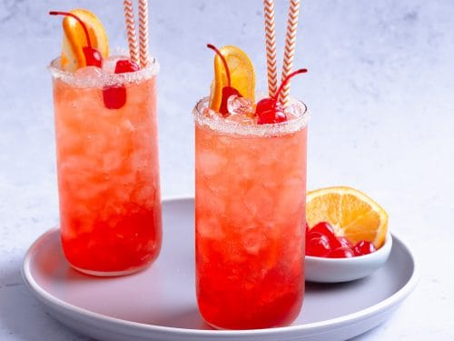

Shirley Temple

A Shirley Temple is pretty, pink, and irresistibly fizzy.
It turns any occasion into a celebration, and it’s the
perfect beverage for every age.
- Ice
- 1 (12 ounce!) bottle Grenadine
- 1 (2 liter!) bottle lemon-lime soda
- Maraschino cherries, for garnish
Steps
- Fill glass with ice.
- Add 1 ounce grenadine.
- Top with 8 ounces lemon-lime soda.
- Garnish with maraschino cherries, if desired.